| Lage des Ortes: | südlich von Freudenthal (Bruntál). |
| Bezirk: | Freudenthal (Bruntál) |
| Herrschaft: | Karlsberg (Karlovec) |
| Forstamt: | Karlsberg (Karlovec) |
| Forstrevier: | Rautenberg (Roudno) |
| Evidenznummer: | 072a |
| Abmessungen: | nicht festgestellt |
Beschreibung:
Rechteckige Tafel in einem aus nicht bearbeiteten Steinen gemauerten Denkmal.
Der Gedenkstein trägt folgende deutsche Inschrift:
„FÜRST JOHANN EICHEN gepflanzt im Frühjahr 1898 zum 40 JÄHRIGEN REGIERUNGS: JUBILÄUM welches auf den 12. November d.J. fällt.“Aus der Inschrift erfahren wir, dass die Eichen schon im Frühling gepflanzt wurden.
15.6.2011 - Die Fotografien hat Herr Petr Vomáèka geschickt.
 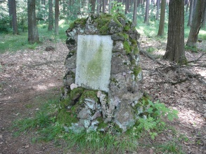
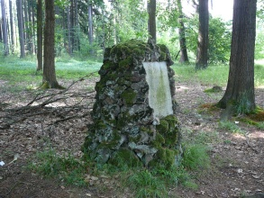
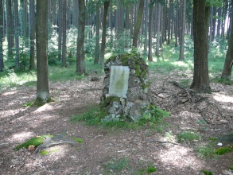
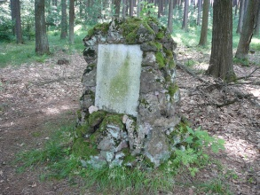
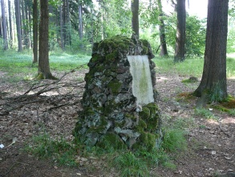
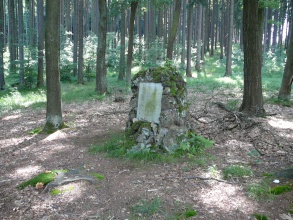
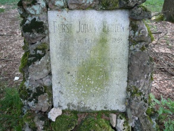
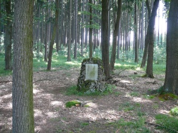
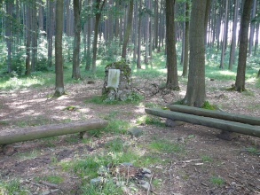
15.11.2012 - Die Fotografien hat Herr Jan Matouš, http://smirci-krize.cz geschickt.
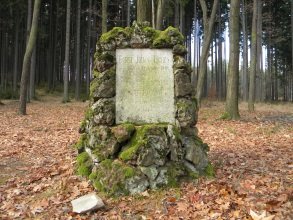
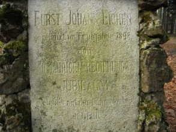
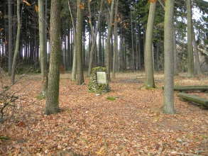
Verweise auf externe Web-Seiten:
http://foto.mapy.cz/46531-Pamatnik-v-lese-u-Volarny - Foto und kurze Beschreibung.
{kind=link}
{kind=link}
{kind=link}
{kind=link}
{kind=link}
{kind=link}
{kind=link}
{kind=link}
{kind=link}